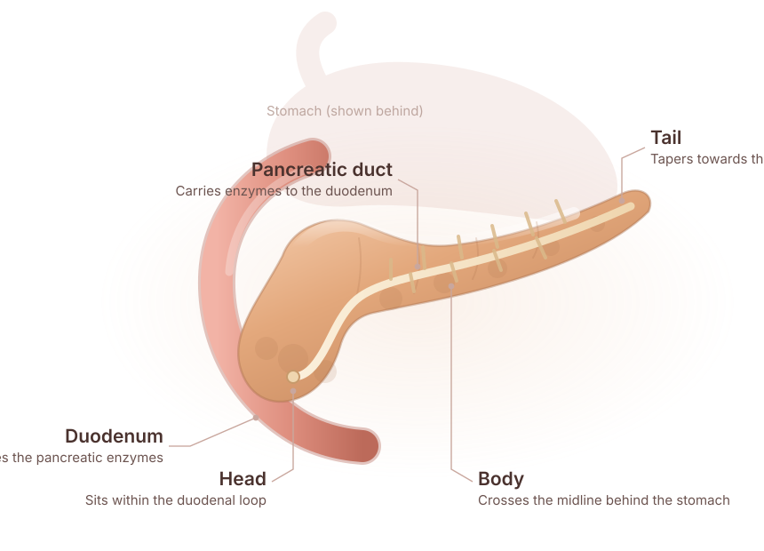

Acute Pancreatitis
Sudden inflammation, most often caused by gallstones or alcohol. Severe cases need immediate fluid resuscitation, pain control and monitoring for organ failure or necrosis.
Emergency careExpert pancreatic diagnosis, surgery and long-term care — delivered by a dedicated hepato-pancreato-biliary team. From the first scan to recovery and follow-up, you are treated by the same specialists, without travelling to a distant city.


The pancreas sits deep in the abdomen, behind the stomach. It does two jobs at once: it produces the enzymes that break down fat, protein and carbohydrate, and it releases the insulin and glucagon that hold your blood sugar steady. When it is inflamed or obstructed, both jobs fail quietly — which is why pancreatic disease is so often found late.
PancreaCare+ is Advitya Healthcares' dedicated pancreatic programme. It brings hepato-pancreato-biliary surgeons, gastroenterologists, radiologists, oncologists and dietitians around a single table, so that diagnosis is precise, treatment is planned once, and follow-up does not depend on which department you happen to reach.
From a single acute attack to complex resections — each condition is managed by the same specialist team, using one shared treatment plan.
Sudden inflammation, most often caused by gallstones or alcohol. Severe cases need immediate fluid resuscitation, pain control and monitoring for organ failure or necrosis.
Emergency care
Persistent inflammation that scars the gland and slowly reduces enzyme and hormone production. Managed with pain control, enzyme replacement, diet and duct drainage where needed.
Long-term care
Most commonly adenocarcinoma of the duct lining; less often a neuroendocrine tumour. Staged with CT, EUS and biopsy, then treated by surgery, chemotherapy or a combination.
Surgical oncology
Fat infiltrating the gland, usually alongside obesity, diabetes or fatty liver. Often silent, but linked to inflammation and reduced function — managed with metabolic and lifestyle care.
Metabolic
Serous cystadenomas, IPMNs, mucinous cystic neoplasms and pseudocysts. Some need only surveillance; IPMNs and MCNs carry a risk of turning cancerous and may need removal.
Surveillance
An immune-driven inflammation that can closely mimic pancreatic cancer on imaging. Accurate distinction matters — it usually responds well to steroid therapy rather than surgery.
Immunology
Inherited gene changes such as PRSS1 that cause repeated inflammation from a young age. Requires genetic counselling, family screening and lifelong cancer surveillance.
GeneticIndividually these are common and often harmless. Together, or persisting beyond a couple of weeks, they deserve a proper pancreatic assessment.
Persistent pain in the upper abdomen, often worse after eating or lying flat.
Pain that radiates from the upper abdomen straight through to the mid-back.
Yellowing of the skin or eyes, dark urine and pale stools — a sign of bile duct obstruction.
Losing weight without trying, often alongside oily or floating stools.
Feeling full quickly, or a persistent lack of interest in food with nausea.
Diabetes appearing for the first time after 50, particularly with weight loss.
Severe abdominal pain with vomiting, fever or jaundice needs to be seen the same day. Call +91 9211221551 rather than waiting for a scheduled appointment.
Pancreatic disease is difficult to see and easy to mistake. Each step below narrows the possibilities before anyone commits to a treatment plan.
History, examination and a review of every previous report, scan and prescription.
Ultrasound and blood work — enzymes, liver function and tumour markers.
High-resolution cross-sectional imaging to map the gland, ducts and blood vessels.
Endoscopic ultrasound for close-range imaging and tissue sampling where needed.
Findings taken to a multidisciplinary board so the stage and plan are agreed once.
A written plan covering procedure, nutrition, recovery and follow-up schedule.
Open, laparoscopic and robotic approaches, alongside the medical and supportive care that determines how well you recover.
Open, laparoscopic and robotic resections, including central pancreatectomy and duct drainage procedures for chronic disease.
Pancreaticoduodenectomy for tumours of the pancreatic head — removing the head, duodenum, gallbladder and bile duct, then reconstructing.
Removal of the body and tail of the pancreas, sometimes with the spleen, for tumours and cysts of the distal gland.
Complete removal for widespread or hereditary disease, with structured insulin and enzyme replacement planned from day one.
Neoadjuvant treatment to shrink a tumour before surgery, or adjuvant treatment afterwards to reduce the risk of recurrence.
Endoscopic stent placement via ERCP to relieve bile duct obstruction, clear jaundice and restore normal drainage.
Structured pain control for chronic pancreatitis and advanced disease, including nerve blocks where medication is not enough.
Pancreatic enzyme replacement therapy, vitamin monitoring and a diet plan built around what you can actually eat and digest.
Pancreatic outcomes depend heavily on how often a team does this work. Ours does it as its primary focus — and brings that expertise to where patients actually live.
Fellowship-trained hepato-pancreato-biliary and GI surgical oncology, including console-trained robotic surgery.
Surgeons, gastroenterologists, radiologists, oncologists, dietitians and stoma nurses working from one shared plan.
High-resolution CT, MRI and MRCP, endoscopic ultrasound, ERCP, and genetic and biomarker testing where it changes management.
A written plan for your stage, your fitness and your circumstances — with a cost estimate before admission.
Scheduled imaging, enzyme and nutrition review, and phone follow-up once you are home — with the same faces throughout.
Six stages, from your first appointment to long-term follow-up — so you always know where you are and what comes next.
Your history and existing reports reviewed by a specialist, in person or by video.
Imaging, endoscopy and biopsy as needed, to confirm what is happening and its stage.
The multidisciplinary board agrees the plan, and it is explained to you in writing.
Surgery, endoscopic intervention, chemotherapy or medical management — as planned.
Pain control, graded diet, enzyme support and early mobilisation with the ward team.
Scheduled review, surveillance imaging and nutrition support once you are home.
Detailed, plain-language guides written by our team — so the conversation in clinic starts from a better place.
What the gland does, how it controls digestion and blood sugar, and the tests used to check that it is working.
Read the guide EmergencyCauses, symptoms, how it is diagnosed, when ERCP is needed, and why gallbladder removal usually follows.
Read the guide Long-termHow it differs from an acute attack, what enzyme replacement does, and the diet that keeps symptoms manageable.
Read the guide OncologyTypes, risk factors, staging, who qualifies for surgery, and what recovery after a Whipple actually involves.
Read the guidePersistent upper abdominal pain radiating to the back, unexplained weight loss, jaundice, greasy or floating stools, and new-onset diabetes after 50. Any of these lasting more than a couple of weeks deserves a specialist review — early pancreatic disease is often silent, which is why symptoms that persist matter more than symptoms that are severe.
Diagnosis is layered rather than a single test:
Pancreatic surgery is major surgery, and outcomes depend strongly on how often the team performs it. High-volume centres with fellowship-trained hepato-pancreato-biliary surgeons report substantially lower complication rates than occasional operators. Look for a specialist surgeon, a centre that does this work routinely, and a multidisciplinary team including gastroenterologists, dietitians and endocrinologists.
Most patients stay in hospital for 7–14 days depending on the procedure and their condition on admission. Returning to routine activity typically takes 6–8 weeks, with diet and enzyme support guided by our nutrition team throughout. Fatigue and digestive adjustment are normal in the first months.
It depends on how much of the gland is removed. A limited resection often leaves enough insulin-producing tissue behind. A total pancreatectomy always causes diabetes, so insulin therapy and enzyme replacement are planned from the outset with an endocrinologist and dietitian.
No — the scarring it causes is permanent. With proper management, however, symptoms can be controlled and complications minimised: stopping alcohol and smoking, structured pain control, enzyme supplements, a low-fat and nutrient-dense diet, and procedures to drain blocked ducts or pseudocysts where needed.
Yes. For outstation patients, a video review of your existing scans and reports is usually the first step, so the trip is made only when it will change something. Bring the actual films or CD rather than only the printed report, along with previous prescriptions, discharge summaries and blood work from the last three months.
We work with most major insurers and TPAs. Share your policy details at least 48 hours before a planned admission so pre-authorisation can be cleared in time; for emergencies the desk starts the claim while treatment begins. Once the treating consultant confirms the plan, the billing desk issues a written estimate covering surgery, stay, consumables and expected investigations.
Looking for more detail? Read the complete pancreas guide below — 99 questions across eighteen chapters.
Written for patients and families, in plain language. Open only the chapter you need — each one holds the full set of questions we are asked about that topic.
The pancreas is a vital gland located deep in the abdomen. It sits behind the stomach and is nestled between the liver, spleen and small intestine. Shaped like a flat, elongated fish, it has three main parts:
The pancreas plays two critical roles:
The pancreas produces three main types of enzyme:
These enzymes are crucial for nutrient absorption and energy production. Without them, food would pass through your system without providing nourishment.
The pancreas secretes hormones into the bloodstream:
This delicate balance keeps your energy levels stable throughout the day.
Together, these systems ensure smooth digestion and metabolism.
A healthy pancreas operates silently and seamlessly. You likely have a well-functioning pancreas if:
The pancreas has some ability to recover, particularly from mild inflammation such as acute pancreatitis. However, chronic damage — due to repeated inflammation, alcohol misuse or other factors — can lead to irreversible scarring and loss of function. Preventive care is key to protecting this organ.
Practical tips for pancreatic health:
Early diagnosis can prevent complications and improve treatment outcomes.
Understanding your pancreas can empower you to recognise early warning signs of issues like diabetes, pancreatitis or pancreatic cancer. Awareness is the first step toward prevention and timely care.
The pancreas may be small, but its impact on health is immense. Protecting it through a healthy lifestyle and regular checkups can go a long way toward preventing disease and ensuring long-term wellness.
For the illustrated version of this chapter, see Understanding the normal pancreas.
Acute severe pancreatitis (ASP) is an inflammation of the pancreas that occurs suddenly and can cause severe complications. The pancreas is a vital organ responsible for producing digestive enzymes and regulating blood sugar. In ASP, the inflammation can damage not only the pancreas but also surrounding tissues and organs.
Symptoms can be intense and sudden. They include:
Seek medical attention immediately — acute severe pancreatitis can escalate quickly.
ASP requires hospitalisation and immediate medical care. Medical management includes:
Endoscopic treatments can be essential, particularly when ASP is caused by gallstones or a blockage in the bile duct:
The outlook depends on how quickly treatment is initiated and the severity of the condition. With timely medical care many patients recover, but severe cases can involve a prolonged hospital stay and may require intensive care. Long-term complications may include diabetes or chronic pancreatitis if extensive pancreatic damage occurs.
The most common cause is gallstones, which form in the gallbladder and can move into the bile duct. When these stones get stuck, they obstruct the flow of bile and pancreatic fluids, leading to inflammation of the pancreas. Sometimes narrowing or swelling of the bile duct can also contribute.
Seek medical attention immediately — untreated pancreatitis can lead to serious complications.
Diagnosis typically involves blood tests to check for elevated pancreatic enzymes and liver function tests. Imaging studies such as abdominal ultrasound, CT scan or MRI may be used to visualise the gallstones and the inflammation in the pancreas. Sometimes an endoscopic procedure called ERCP is used both to diagnose and to treat the condition.
The first step is usually hospitalisation to manage symptoms such as pain, nausea and dehydration. The patient is given IV fluids and may need to stop eating temporarily to let the pancreas rest. If gallstones are the cause, they may be removed through an ERCP procedure. In some cases surgery is needed to remove the gallbladder and prevent future episodes.
Treatment begins with hospitalisation to stabilise the patient:
In mild cases, symptoms may improve with conservative medical management alone. However, without addressing the underlying cause — typically a gallstone — the risk of recurrence is high.
ERCP (endoscopic retrograde cholangiopancreatography) is a minimally invasive procedure often performed when a gallstone is stuck in the bile duct.
It combines endoscopy and X-ray to visualise the bile and pancreatic ducts. During the procedure a doctor can remove the obstructing stone or place a stent to ensure proper bile drainage.
When: ERCP is usually indicated if there is persistent blockage, cholangitis (bile duct infection) or jaundice. It is often performed within 24–48 hours of diagnosis when these complications are present.
Safety: while generally safe, ERCP carries some risk of infection, bleeding or even inducing pancreatitis. In expert hands, the benefits of relieving bile duct obstruction usually outweigh the risks.
Surgery may be required for patients with severe or recurrent biliary pancreatitis, particularly if gallstones are the cause.
If the gallbladder is not the cause, or if complications like necrosis or infection occur, more complex surgery may be needed — such as drainage of pancreatic fluid collections or removal of damaged tissue.
The prognosis depends on severity. In mild cases patients recover within a few days with appropriate treatment. In more severe cases, complications such as infection, pancreatic necrosis (tissue death) or organ failure may occur. Removing the gallbladder usually prevents future episodes of biliary pancreatitis.
The best way is to reduce the risk of gallstones, the leading cause:
If you are prone to gallstones or have had previous episodes, your doctor may recommend gallbladder removal to prevent future attacks.
Seek medical attention immediately if you experience severe abdominal pain, especially with nausea, vomiting, fever or jaundice. These could be signs of biliary pancreatitis or another serious condition that requires urgent care.
Chronic pancreatitis is a persistent inflammation of the pancreas that leads to irreversible damage over time. The inflamed pancreas becomes scarred and loses its ability to produce enzymes and hormones, affecting digestion and blood sugar regulation.
Acute pancreatitis is a sudden inflammation that often resolves with treatment. Chronic pancreatitis develops gradually and leads to permanent damage, causing recurring pain, digestive issues and sometimes diabetes.
Treatment focuses on managing symptoms and preventing complications:
Diet plays a crucial role. Eating the right foods reduces strain on the pancreas and improves digestion:
Avoid fried foods, high-fat meals and alcohol. Consulting a dietitian helps tailor a plan to your needs.
There is no cure for chronic pancreatitis. However, with proper management, symptoms can be controlled and complications minimised. Adhering to medical advice and making lifestyle changes are crucial for improving quality of life.
Early intervention can help manage the condition and prevent complications.
Living with chronic pain and dietary restrictions can lead to stress, anxiety or depression. Seeking support from healthcare professionals, counsellors or support groups can make a big difference.
Pancreatic cancer occurs when abnormal cells grow uncontrollably in the pancreas, a vital organ located behind the stomach. The pancreas has two primary functions: producing enzymes that aid digestion and hormones that regulate blood sugar. Most pancreatic cancers begin in the cells lining the ducts of the pancreas (adenocarcinoma), but others can develop in hormone-producing or enzyme-producing cells.
Early-stage pancreatic cancer may not cause noticeable symptoms, making it difficult to detect. As it progresses:
If these symptoms persist or worsen, consult your doctor for further evaluation.
Surgery — if detected early, surgery can remove the cancerous part of the pancreas:
Alongside surgery:
Because pancreatic cancer is often diagnosed at an advanced stage, palliative care plays a crucial role in improving quality of life. Palliative treatments focus on managing symptoms such as pain, digestive issues and jaundice, as well as emotional support for patients and their families.
It is not always possible to prevent pancreatic cancer, but certain lifestyle changes may lower your risk:
Not all patients with pancreatic cancer are candidates for surgery. Whether surgery is an option depends on the size and location of the tumour, whether it has spread, and the overall health of the patient. Typically, patients with localised or borderline resectable cancer are considered for surgery. Those with advanced cancer that has spread to distant organs usually require other treatments, such as chemotherapy or radiation.
Surgery offers the best chance for long-term survival, especially when combined with other treatments like chemotherapy and radiation. Effectiveness depends on the stage of cancer, the patient's response to treatment, and whether the tumour can be completely removed. Even after surgery, pancreatic cancer has a high rate of recurrence, which is why post-surgical treatments are important.
Recovery from pancreatic surgery can be lengthy. Hospital stays typically range from one to two weeks, and full recovery may take several months. Patients may experience fatigue, digestive issues and pain as they heal. Follow-up care, including nutritional support and monitoring for recurrence, is essential.
Yes. Many patients receive chemotherapy or radiation either before surgery (neoadjuvant therapy) to shrink the tumour, or after surgery (adjuvant therapy) to reduce the risk of recurrence. The decision is based on the cancer's stage and the patient's overall health.
Non-cancerous pancreatic tumours are growths in the pancreas that do not spread to other parts of the body. Unlike cancerous tumours they are usually less aggressive, but may still require medical attention depending on their size, location and impact on pancreatic function.
The exact cause is often unknown, but risk factors may include:
Some tumours are asymptomatic and discovered incidentally during imaging for other conditions.
Your doctor will decide the best course of action based on the individual case.
Regular follow-up with your doctor is crucial to monitor any changes.
Some benign tumours, like IPMNs and MCNs, carry a risk of turning cancerous over time. Early detection and regular monitoring are crucial to preventing progression. However, most benign tumours do not develop into cancer.
If you are diagnosed with a pancreatic tumour, follow your doctor's recommendations for treatment or monitoring.
The choice depends on the specific case and the surgeon's expertise.
Careful monitoring and expert surgical teams reduce these risks.
The pancreas produces enzymes essential for digesting fats, proteins and carbohydrates. After surgery, reduced enzyme production can lead to:
To manage this, doctors may prescribe pancreatic enzyme replacement therapy (PERT) to aid digestion.
Success depends on the underlying condition, the patient's health and the surgical team's expertise. Advances in techniques and post-operative care have significantly improved outcomes, particularly at specialised centres.
Your doctor should explain your condition in detail, including whether it is acute, chronic, or related to something like pancreatic cancer or pancreatitis. Do not hesitate to ask for clarification if any medical terms are unclear.
Understanding the underlying cause — gallstones, alcohol use, genetic factors or a tumour — helps you make the right lifestyle changes or seek specific treatments.
Knowing the stage or severity of your disease helps you understand the prognosis and how urgent treatment is.
This helps you understand what to expect, and when to worry about new or worsening symptoms.
Ask about dietary changes, pain management and medications that can ease symptoms.
Some pancreatic diseases, like chronic pancreatitis, require specific dietary restrictions — particularly avoiding alcohol and fatty foods.
Doctors may recommend blood tests, imaging studies like CT scans or MRIs, or endoscopic procedures like ERCP. Ask about the purpose of each one.
Understanding potential side effects or complications helps you make informed decisions.
Treatment may include medications, endoscopic procedures, surgery or chemotherapy, depending on the condition.
Knowing the pros and cons of each option helps you weigh your choices properly.
Ask about evidence-based lifestyle modifications, supplements or other approaches that could help alongside your main treatment.
Ask about the type of surgery, what it entails and the expected outcomes.
Understanding risks such as infection or digestive problems is essential before you agree to a procedure.
Ask about the expected hospital stay, the downtime afterwards, and when you can return to normal activities.
Have an honest discussion about your prognosis and long-term expectations.
This helps you prepare for potential lifestyle changes and seek support when you need it.
This helps you catch complications or worsening symptoms early, rather than at the next scheduled appointment.
Make sure you understand the purpose, dosage and side effects of each one.
Knowing the potential risks helps with planning and ongoing monitoring.
This gives you a sense of what adjustments you might need to make, and for how long.
Support groups help you connect with others facing similar challenges. Our patient support group is led by the PancreaCare team.
Knowing how they can help improves collaboration and reduces stress for everyone.
Make sure you are prepared for medical expenses and have explored your insurance coverage. Once the treating consultant confirms the plan, our billing desk issues a written estimate covering surgery, stay, consumables and expected investigations.
Some hospitals and organisations provide resources for managing costs. Share your policy details at least 48 hours before a planned admission so pre-authorisation can be cleared in time.
This keeps you focused on the actionable steps that will have the greatest impact.
By asking the questions in these chapters you will be better equipped to understand your diagnosis, your treatment options and your overall care. Your doctor is there to help, so do not hesitate to seek clarity or voice concerns. Empower yourself with knowledge and take an active role in managing your health.
This guide is general patient information, not a diagnosis. To discuss your own reports, call +91 9211221551 or book a consultation.
Take the first step towards expert pancreas care with PancreaCare by Advitya Healthcares.
+91 9211221551 · info@advityahealthcares.com · Reports reviewed before you travel